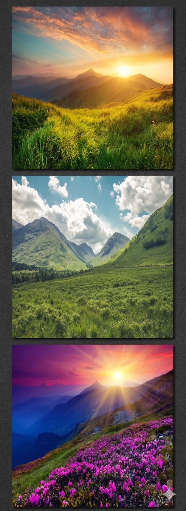
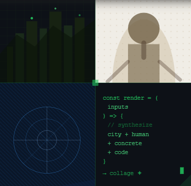

Візуал
Деталі
Особливості

Мультимодальний підбір Розумна модель глибоко аналізує сюжет, настрій та колірну гаму кожного завантаженого кадру. Вона самостійно групує фотографії за логікою та сенсом. Такий інтелектуальний підхід дозволяє створювати не просто набір зображень, а цілісну й продуману візуальну історію, де кожен елемент підсилює загальну атмосферу композиції.

Інтелектуальні алгоритми Gemini в режимі реального часу аналізують пропорції, сюжет та колірну гаму завантажених фотографій. Модель самостійно групує кадри за сенсом і миттєво підбирає ідеальну дизайнерську сітку. Це повністю виключає невдале кадрування, залишаючи кожне обличчя та важливу деталь у центрі уваги. Система бере на себе всю рутинну технічну роботу, перетворюючи хаотичний набір знімків на цілісну візуальну історію.
Естетика мінімалізму Нейромережа фокусується на лаконічності, прибираючи весь візуальний шум. Вона створює чисті, стримані концепції, де кожен елемент дихає і працює на загальну композицію.

ШІ філігранно працює з відступами, рамками та фокусом уваги, створюючи витончений журнальний стиль без перевантаження деталями. Кожен елемент композиції займає своє вивірене місце, формуючи ідеальний баланс між вільним простором та ключовими візуальними об'єктами. Завдяки такому підходу звичайний набір фотографій перетворюється на вишуканий цифровий артбук, який приковує погляд своєю лаконічною естетикою.
